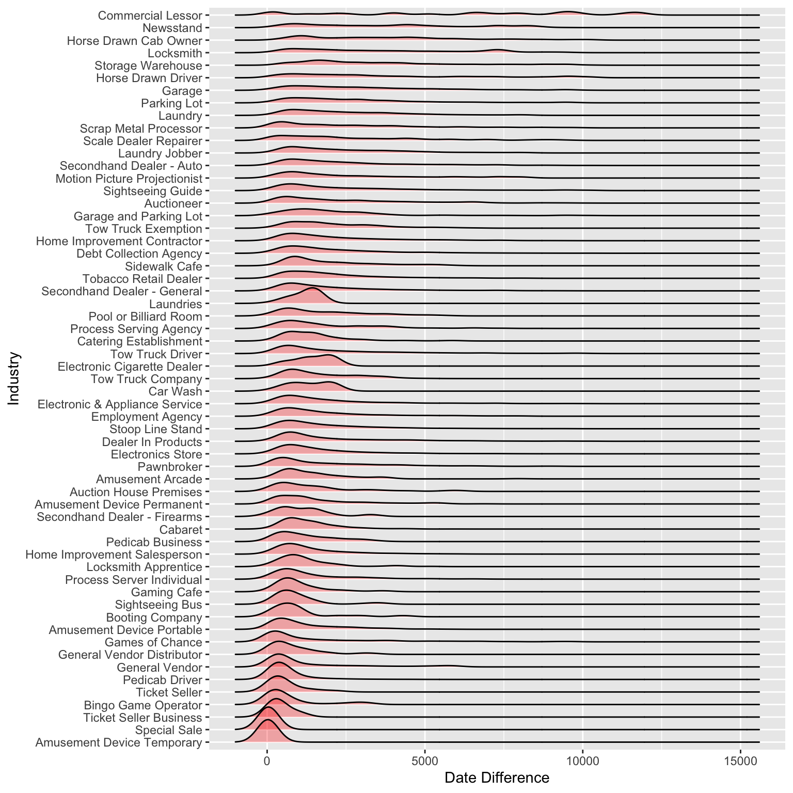

Chapter 4 Missing values

We get 364 missing patterns in our dataset which we believe is reasonable since we had ~300,000 observations in our data.
Further, our original dataset has 27 columns in total. As we can see 3 columns have more than 75% values missing. These columns are Secondary Street Name, Detail (open text variable describing the business), and Business Name 2 (for eg. McDonald’s BN2 is McD). We drop these 3 columns to improve our missing pattern analysis.
To improve the visibility of our graph further we drop all the missing patterns with count <=50 (<0.016% observations). This step simply help us in building a neater and more readable graphic without losing out on any crucial information. Note that these two steps won’t have any impact on the percentage of missing patterns or percentage of missing column values since they both are essentially just trimming the height and width of the original graphic.
Observations: 1. Post processing the dataset we find 30 most frequently occurring missing patterns. 2. As we can see, the missing pattern with complete cases tops the list which is a positive news for our analysis. This in a way also validates our decision to remove the three columns with more than 75% missing values. As we can see in the plot above ‘complete cases’ initially lied pretty much in the middle of the plot. 3. We notice that the columns with most missing values are either redundant columns or not really helping in answering the three questions we aim to probe. For instance, BrC (Borough Code) is redundant since we already have the Address Borough (AddressBr). Also, CnP (contact phone number) plays no role in our analysis. The same holds for most other columns except location, latitude, and longitude. Most of the important columns for our analysis e.g. Industry type(Ind), Zip Code(AZI), License Type(LcT), Expiration Date (LED) have negligible missing values. 4. We also notice that latitude, longitude and the location i.e, (lat, long) are missing in tandem to each other i.e, either all the three are missing or all the three are present.